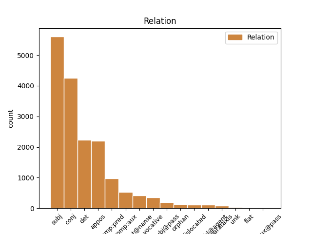
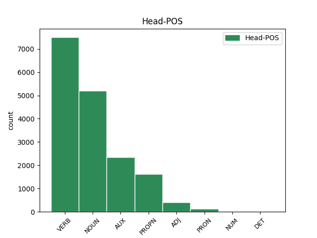
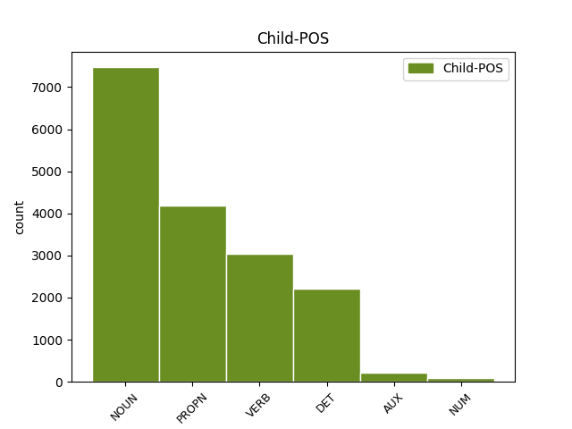

Distribution of features within this leaf



Agreement Rules sorted by frequency.
- When the dependent token is the subject(subj) of the head token, and the dependent token is NOUN.
1 Здрави съдравыи ADJ A- Case=Nom|Degree=Pos|Gender=Masc|Number=Plur|Strength=Strong 0 _ _ _
2 князи кънязь NOUN Nb Case=Nom|Gender=Masc|Number=Plur 1 subj _ ref=217
3 и _ _ _ _ 0 _ _ _
4 дружина _ _ _ _ 0 _ _ _
5 побарая _ _ _ _ 0 _ _ _
6 за _ _ _ _ 0 _ _ _
7 христьяны _ _ _ _ 0 _ _ _
8 на _ _ _ _ 0 _ _ _
9 поганыя _ _ _ _ 0 _ _ _
10 плъки _ _ _ _ 0 _ _ _
1 Того тыи DET Pd Case=Gen|Gender=Masc|Number=Sing 3 det _ ref=165
2 стараго _ _ _ _ 0 _ _ _
3 Владиміра владимиръ PROPN Ne Case=Gen|Gender=Masc|Number=Sing 0 _ _ _
4 нельзѣ _ _ _ _ 0 _ _ _
5 бѣ _ _ _ _ 0 _ _ _
6 пригвоздити _ _ _ _ 0 _ _ _
7 къ _ _ _ _ 0 _ _ _
8 горамъ _ _ _ _ 0 _ _ _
9 кіевскимъ _ _ _ _ 0 _ _ _
1 Игорь игорь PROPN Ne Case=Nom|Gender=Masc|Number=Sing 2 subj _ ref=213
2 ѣдетъ ѣхати VERB V- Mood=Ind|Number=Sing|Person=3|Tense=Pres|VerbForm=Fin|Voice=Act 0 _ _ _
3 по _ _ _ _ 0 _ _ _
4 Боричеву _ _ _ _ 0 _ _ _
5 къ _ _ _ _ 0 _ _ _
6 святѣй _ _ _ _ 0 _ _ _
7 Богородици _ _ _ _ 0 _ _ _
8 Пирогощей _ _ _ _ 0 _ _ _
1 Не _ _ _ _ 0 _ _ _
2 мало _ _ _ _ 0 _ _ _
3 ти _ _ _ _ 0 _ _ _
4 величія _ _ _ _ 0 _ _ _
5 лелѣявшу _ _ _ _ 0 _ _ _
6 князя _ _ _ _ 0 _ _ _
7 на _ _ _ _ 0 _ _ _
8 влънах _ _ _ _ 0 _ _ _
9 стлавшу стьлати VERB V- Case=Dat|Gender=Masc|Number=Sing|Strength=Strong|Tense=Past|VerbForm=Part|Voice=Act 0 _ _ _
10 ему _ _ _ _ 0 _ _ _
11 зелѣну _ _ _ _ 0 _ _ _
12 траву _ _ _ _ 0 _ _ _
13 на _ _ _ _ 0 _ _ _
14 своихъ _ _ _ _ 0 _ _ _
15 сребреныхъ _ _ _ _ 0 _ _ _
16 брезѣхъ _ _ _ _ 0 _ _ _
17 одѣвавшу одѣвати VERB V- Case=Dat|Gender=Masc|Number=Sing|Strength=Strong|Tense=Past|VerbForm=Part|Voice=Act 9 conj _ ref=195
18 его _ _ _ _ 0 _ _ _
19 теплыми _ _ _ _ 0 _ _ _
20 мъглами _ _ _ _ 0 _ _ _
21 подъ _ _ _ _ 0 _ _ _
22 сѣнію _ _ _ _ 0 _ _ _
23 зелену _ _ _ _ 0 _ _ _
24 древу _ _ _ _ 0 _ _ _
1 Слава _ _ _ _ 0 _ _ _
2 Игорю игорь PROPN Ne Case=Dat|Gender=Masc|Number=Sing 0 _ _ _
3 Святъславличю _ _ _ _ 0 _ _ _
4 буй _ _ _ _ 0 _ _ _
5 туру туръ NOUN Nb Case=Dat|Gender=Masc|Number=Sing 2 conj _ ref=216
6 Всеволоду _ _ _ _ 0 _ _ _
7 Владиміру _ _ _ _ 0 _ _ _
8 Игоревичу _ _ _ _ 0 _ _ _
1 Игорь игорь PROPN Ne Case=Nom|Gender=Masc|Number=Sing 0 _ _ _
2 князь кънязь NOUN Nb Case=Nom|Gender=Masc|Number=Sing 1 appos _ ref=211
3 въ _ _ _ _ 0 _ _ _
4 Руской _ _ _ _ 0 _ _ _
5 земли _ _ _ _ 0 _ _ _
1 Слава _ _ _ _ 0 _ _ _
2 Игорю _ _ _ _ 0 _ _ _
3 Святъславличю _ _ _ _ 0 _ _ _
4 буй _ _ _ _ 0 _ _ _
5 туру туръ NOUN Nb Case=Dat|Gender=Masc|Number=Sing 0 _ _ _
6 Всеволоду вьсеволодъ PROPN Ne Case=Dat|Gender=Masc|Number=Sing 5 appos _ ref=216
7 Владиміру _ _ _ _ 0 _ _ _
8 Игоревичу _ _ _ _ 0 _ _ _
1 Слава _ _ _ _ 0 _ _ _
2 Игорю _ _ _ _ 0 _ _ _
3 Святъславличю _ _ _ _ 0 _ _ _
4 буй _ _ _ _ 0 _ _ _
5 туру туръ NOUN Nb Case=Dat|Gender=Masc|Number=Sing 0 _ _ _
6 Всеволоду _ _ _ _ 0 _ _ _
7 Владиміру владимиръ PROPN Ne Case=Dat|Gender=Masc|Number=Sing 5 conj _ ref=216
8 Игоревичу _ _ _ _ 0 _ _ _
1 Ты _ _ _ _ 0 _ _ _
2 лелѣялъ лелѣяти VERB V- Aspect=Res|Case=Nom|Gender=Masc|Number=Sing|Strength=Strong|VerbForm=Part|Voice=Act 3 comp:aux _ ref=179
3 еси быти AUX V- Mood=Ind|Number=Sing|Person=2|Tense=Pres|VerbForm=Fin|Voice=Act 0 _ _ _
4 на _ _ _ _ 0 _ _ _
5 себѣ _ _ _ _ 0 _ _ _
6 Святославли _ _ _ _ 0 _ _ _
7 носады _ _ _ _ 0 _ _ _
8 до _ _ _ _ 0 _ _ _
9 плъку _ _ _ _ 0 _ _ _
10 Кобякова _ _ _ _ 0 _ _ _
1 Немизѣ _ _ _ _ 0 _ _ _
2 кровави _ _ _ _ 0 _ _ _
3 брезѣ _ _ _ _ 0 _ _ _
4 не _ _ _ _ 0 _ _ _
5 бологомъ _ _ _ _ 0 _ _ _
6 бяхуть быти AUX V- Aspect=Imp|Mood=Ind|Number=Plur|Person=3|Tense=Past|VerbForm=Fin|Voice=Act 0 _ _ _
7 посѣяни посѣяти VERB V- Case=Nom|Gender=Masc|Number=Plur|Strength=Strong|Tense=Past|VerbForm=Part|Voice=Pass 6 comp:pred _ ref=158
8 посѣяни _ _ _ _ 0 _ _ _
9 костьми _ _ _ _ 0 _ _ _
10 рускихъ _ _ _ _ 0 _ _ _
11 сыновъ _ _ _ _ 0 _ _ _
1 Слава _ _ _ _ 0 _ _ _
2 Игорю _ _ _ _ 0 _ _ _
3 Святъславличю _ _ _ _ 0 _ _ _
4 буй _ _ _ _ 0 _ _ _
5 туру _ _ _ _ 0 _ _ _
6 Всеволоду _ _ _ _ 0 _ _ _
7 Владиміру владимиръ PROPN Ne Case=Dat|Gender=Masc|Number=Sing 0 _ _ _
8 Игоревичу игоревичь PROPN Ne Case=Dat|Gender=Masc|Number=Sing 7 flat@name _ ref=216
1 не _ _ _ _ 0 _ _ _
2 вѣдалъ _ _ _ _ 0 _ _ _
3 ѥсмь _ _ _ _ 0 _ _ _
4 оже _ _ _ _ 0 _ _ _
5 ѥсть быти AUX V- Mood=Ind|Number=Sing|Person=3|Tense=Pres|VerbForm=Fin|Voice=Act 0 _ _ _
6 холѡпъ холопъ NOUN Nb Case=Nom|Gender=Masc|Number=Sing 5 comp:pred _ ref=115
1 Чему _ _ _ _ 0 _ _ _
2 господине господинъ NOUN Nb Case=Voc|Gender=Masc|Number=Sing 3 vocative _ ref=183
3 простре прострѣти VERB V- Aspect=Perf|Mood=Ind|Number=Sing|Person=2|Tense=Past|VerbForm=Fin|Voice=Act 0 _ _ _
4 горячюю _ _ _ _ 0 _ _ _
5 свою _ _ _ _ 0 _ _ _
6 лучю _ _ _ _ 0 _ _ _
7 на _ _ _ _ 0 _ _ _
8 ладѣ _ _ _ _ 0 _ _ _
9 вои _ _ _ _ 0 _ _ _
1 Немизѣ _ _ _ _ 0 _ _ _
2 кровави _ _ _ _ 0 _ _ _
3 брезѣ брѣгъ NOUN Nb Case=Nom|Gender=Masc|Number=Plur 6 subj@pass _ ref=158
4 не _ _ _ _ 0 _ _ _
5 бологомъ _ _ _ _ 0 _ _ _
6 бяхуть быти AUX V- Aspect=Imp|Mood=Ind|Number=Plur|Person=3|Tense=Past|VerbForm=Fin|Voice=Act 0 _ _ _
7 посѣяни _ _ _ _ 0 _ _ _
8 посѣяни _ _ _ _ 0 _ _ _
9 костьми _ _ _ _ 0 _ _ _
10 рускихъ _ _ _ _ 0 _ _ _
11 сыновъ _ _ _ _ 0 _ _ _
1 аче _ _ _ _ 0 _ _ _
2 же _ _ _ _ 0 _ _ _
3 холѡпъ _ _ _ _ 0 _ _ _
4 кдѣ _ _ _ _ 0 _ _ _
5 куны _ _ _ _ 0 _ _ _
6 вложить въложити VERB V- Mood=Ind|Number=Sing|Person=3|Tense=Pres|VerbForm=Fin|Voice=Act 0 _ _ _
7 а _ _ _ _ 0 _ _ _
8 ѡнъ _ _ _ _ 0 _ _ _
9 будеть быти AUX V- Mood=Ind|Number=Sing|Person=3|Tense=Fut|VerbForm=Fin|Voice=Act 6 conj _ ref=116
10 не _ _ _ _ 0 _ _ _
11 вѣдаꙗ _ _ _ _ 0 _ _ _
12 вдалъ _ _ _ _ 0 _ _ _
13 то _ _ _ _ 0 _ _ _
14 гсну _ _ _ _ 0 _ _ _
15 выкупати _ _ _ _ 0 _ _ _
16 али _ _ _ _ 0 _ _ _
17 лишити _ _ _ _ 0 _ _ _
18 сѧ _ _ _ _ 0 _ _ _
19 ѥго _ _ _ _ 0 _ _ _
1 и _ _ _ _ 0 _ _ _
2 быс _ _ _ _ 0 _ _ _
3 греком _ _ _ _ 0 _ _ _
4 плач _ _ _ _ 0 _ _ _
5 и _ _ _ _ 0 _ _ _
6 оужасъ _ _ _ _ 0 _ _ _
7 велїи _ _ _ _ 0 _ _ _
8 ѡ _ _ _ _ 0 _ _ _
9 рагкавеи _ _ _ _ 0 _ _ _
10 понеже _ _ _ _ 0 _ _ _
11 ратникъ _ _ _ _ 0 _ _ _
12 бѣ _ _ _ _ 0 _ _ _
13 велїи _ _ _ _ 0 _ _ _
14 моужественъ _ _ _ _ 0 _ _ _
15 и _ _ _ _ 0 _ _ _
16 ц҃рю цѣсарь NOUN Nb Case=Dat|Gender=Masc|Number=Sing 17 comp:obl@agent _ ref=301r2
17 любим любити VERB V- Case=Nom|Gender=Masc|Number=Sing|Strength=Strong|Tense=Pres|VerbForm=Part|Voice=Pass 0 _ _ _
1 а _ _ _ _ 0 _ _ _
2 затѣмь _ _ _ _ 0 _ _ _
3 аче _ _ _ _ 0 _ _ _
4 и _ _ _ _ 0 _ _ _
5 кдѣ _ _ _ _ 0 _ _ _
6 налѣзеть налѣзти VERB V- Mood=Ind|Number=Sing|Person=3|Tense=Pres|VerbForm=Fin|Voice=Act 0 _ _ _
7 ѹдареныи ударити VERB V- Case=Nom|Gender=Masc|Number=Sing|Strength=Weak|Tense=Past|VerbForm=Part|Voice=Pass 6 subj _ ref=65
8 тъ _ _ _ _ 0 _ _ _
9 своѥго _ _ _ _ 0 _ _ _
10 истьцѧ _ _ _ _ 0 _ _ _
11 кто _ _ _ _ 0 _ _ _
12 ѥго _ _ _ _ 0 _ _ _
13 ѹдарилъ _ _ _ _ 0 _ _ _
14 то _ _ _ _ 0 _ _ _
15 ꙗрославъ _ _ _ _ 0 _ _ _
16 былъ _ _ _ _ 0 _ _ _
17 ѹставилъ _ _ _ _ 0 _ _ _
18 ѹбити _ _ _ _ 0 _ _ _
19 и _ _ _ _ 0 _ _ _
1 Коли _ _ _ _ 0 _ _ _
2 Игорь _ _ _ _ 0 _ _ _
3 соколомъ _ _ _ _ 0 _ _ _
4 полетѣ полетѣти VERB V- Aspect=Perf|Mood=Ind|Number=Sing|Person=3|Tense=Past|VerbForm=Fin|Voice=Act 8 dislocated _ ref=191
5 тогда _ _ _ _ 0 _ _ _
6 Влуръ _ _ _ _ 0 _ _ _
7 влъкомъ _ _ _ _ 0 _ _ _
8 потече потещи VERB V- Aspect=Perf|Mood=Ind|Number=Sing|Person=3|Tense=Past|VerbForm=Fin|Voice=Act 0 _ _ _
9 труся _ _ _ _ 0 _ _ _
10 собою _ _ _ _ 0 _ _ _
11 студеную _ _ _ _ 0 _ _ _
12 росу _ _ _ _ 0 _ _ _
1 Оба _ _ _ _ 0 _ _ _
2 есвѣ быти AUX V- Mood=Ind|Number=Dual|Person=1|Tense=Pres|VerbForm=Fin|Voice=Act 0 _ _ _
3 Святъславличя святославичь PROPN Ne Case=Nom|Gender=Masc|Number=Dual 2 comp:pred _ ref=20
1 Княже _ _ _ _ 0 _ _ _
2 Игорю _ _ _ _ 0 _ _ _
3 Не _ _ _ _ 0 _ _ _
4 мало _ _ _ _ 0 _ _ _
5 ти _ _ _ _ 0 _ _ _
6 величія _ _ _ _ 0 _ _ _
7 а _ _ _ _ 0 _ _ _
8 Кончаку кончакъ PROPN Ne Case=Dat|Gender=Masc|Number=Sing 9 orphan _ ref=193
9 нелюбія нелюбие NOUN Nb Case=Gen|Gender=Neut|Number=Sing 0 _ _ _
10 а _ _ _ _ 0 _ _ _
11 Руской _ _ _ _ 0 _ _ _
12 земли _ _ _ _ 0 _ _ _
13 веселіа _ _ _ _ 0 _ _ _
1 Полечю полетѣти VERB V- Mood=Ind|Number=Sing|Person=1|Tense=Pres|VerbForm=Fin|Voice=Act 0 _ _ _
2 рече рещи VERB V- Aspect=Perf|Mood=Ind|Number=Sing|Person=3|Tense=Past|VerbForm=Fin|Voice=Act 1 parataxis _ ref=169
3 зегзицею _ _ _ _ 0 _ _ _
4 по _ _ _ _ 0 _ _ _
5 Дунаеви _ _ _ _ 0 _ _ _
1 единъ единъ NUM Ma Case=Nom|Gender=Masc|Number=Sing 3 subj _ ref=147
2 же _ _ _ _ 0 _ _ _
3 изрони изронити VERB V- Aspect=Perf|Mood=Ind|Number=Sing|Person=3|Tense=Past|VerbForm=Fin|Voice=Act 0 _ _ _
4 жемчюжну _ _ _ _ 0 _ _ _
5 душу _ _ _ _ 0 _ _ _
6 изъ _ _ _ _ 0 _ _ _
7 храбра _ _ _ _ 0 _ _ _
8 тѣла _ _ _ _ 0 _ _ _
9 чресъ _ _ _ _ 0 _ _ _
10 злато _ _ _ _ 0 _ _ _
11 ожереліе _ _ _ _ 0 _ _ _
1 Княже _ _ _ _ 0 _ _ _
2 Игорю _ _ _ _ 0 _ _ _
3 Не _ _ _ _ 0 _ _ _
4 мало _ _ _ _ 0 _ _ _
5 ти _ _ _ _ 0 _ _ _
6 величія _ _ _ _ 0 _ _ _
7 а _ _ _ _ 0 _ _ _
8 Кончаку _ _ _ _ 0 _ _ _
9 нелюбія _ _ _ _ 0 _ _ _
10 а _ _ _ _ 0 _ _ _
11 Руской _ _ _ _ 0 _ _ _
12 земли земля NOUN Nb Case=Dat|Gender=Fem|Number=Sing 13 orphan _ ref=193
13 веселіа веселие NOUN Nb Case=Gen|Gender=Neut|Number=Sing 0 _ _ _
1 тоже _ _ _ _ 0 _ _ _
2 тако _ _ _ _ 0 _ _ _
3 повелѣвъшȣ повелѣти VERB V- Case=Dat|Gender=Masc|Number=Sing|Strength=Strong|Tense=Past|VerbForm=Part|Voice=Pass 0 _ _ _
4 никонѹ никонъ PROPN Ne Case=Dat|Gender=Masc|Number=Sing 3 subj@pass _ ref=40
5 по _ _ _ _ 0 _ _ _
6 обычаю _ _ _ _ 0 _ _ _
7 творити _ _ _ _ 0 _ _ _
8 келарю _ _ _ _ 0 _ _ _
9 ѡнъ _ _ _ _ 0 _ _ _
10 же _ _ _ _ 0 _ _ _
11 прѣслѹшанию _ _ _ _ 0 _ _ _
12 творѧ _ _ _ _ 0 _ _ _
13 сълъга _ _ _ _ 0 _ _ _
14 рекыи _ _ _ _ 0 _ _ _
15 ꙗко _ _ _ _ 0 _ _ _
1 Аже _ _ _ _ 0 _ _ _
2 бы _ _ _ _ 0 _ _ _
3 ты _ _ _ _ 0 _ _ _
4 былъ _ _ _ _ 0 _ _ _
5 то _ _ _ _ 0 _ _ _
6 была быти AUX V- Aspect=Res|Case=Nom|Gender=Fem|Number=Sing|Strength=Strong|VerbForm=Part|Voice=Act 7 comp:aux _ ref=125
7 бы быти AUX V- Aspect=Perf|Mood=Ind|Number=Sing|Person=3|Tense=Past|VerbForm=Fin|Voice=Act 0 _ _ _
8 чага _ _ _ _ 0 _ _ _
9 по _ _ _ _ 0 _ _ _
10 ногатѣ _ _ _ _ 0 _ _ _
11 а _ _ _ _ 0 _ _ _
12 кощей _ _ _ _ 0 _ _ _
13 по _ _ _ _ 0 _ _ _
14 резанѣ _ _ _ _ 0 _ _ _
1 Галичкы _ _ _ _ 0 _ _ _
2 Осмомыслѣ осмомыслъ NOUN Nb Case=Voc|Gender=Masc|Number=Sing 3 dislocated _ ref=130
3 Ярославе ярославъ PROPN Ne Case=Voc|Gender=Masc|Number=Sing 0 _ _ _
1 и _ _ _ _ 0 _ _ _
2 ꙗкоже _ _ _ _ 0 _ _ _
3 ѿ _ _ _ _ 0 _ _ _
4 того _ _ _ _ 0 _ _ _
5 остриженъ _ _ _ _ 0 _ _ _
6 бывъ _ _ _ _ 0 _ _ _
7 и _ _ _ _ 0 _ _ _
8 мьнишьскыꙗ _ _ _ _ 0 _ _ _
9 одежа _ _ _ _ 0 _ _ _
10 съподобленъ _ _ _ _ 0 _ _ _
11 пакы _ _ _ _ 0 _ _ _
12 же _ _ _ _ 0 _ _ _
13 и _ _ _ _ 0 _ _ _
14 на _ _ _ _ 0 _ _ _
15 диꙗконьскыи _ _ _ _ 0 _ _ _
16 санъ санъ NOUN Nb Case=Acc|Gender=Masc|Number=Sing 0 _ _ _
17 ѿ _ _ _ _ 0 _ _ _
18 нѥго _ _ _ _ 0 _ _ _
19 изведенъ _ _ _ _ 0 _ _ _
20 сыи _ _ _ _ 0 _ _ _
21 ѥмѹже _ _ _ _ 0 _ _ _
22 и _ _ _ _ 0 _ _ _
23 не _ _ _ _ 0 _ _ _
24 бѣхъ быти AUX V- Aspect=Imp|Mood=Ind|Number=Sing|Person=1|Tense=Past|VerbForm=Fin|Voice=Act 16 appos _ ref=103
25 достоинъ _ _ _ _ 0 _ _ _
26 грѹбъ _ _ _ _ 0 _ _ _
27 сыи _ _ _ _ 0 _ _ _
28 и _ _ _ _ 0 _ _ _
29 невѣгл҃ас _ _ _ _ 0 _ _ _
30 наипаче _ _ _ _ 0 _ _ _
31 же _ _ _ _ 0 _ _ _
32 и _ _ _ _ 0 _ _ _
33 множьствъмь _ _ _ _ 0 _ _ _
34 грѣховъ _ _ _ _ 0 _ _ _
35 напълънѥнъ _ _ _ _ 0 _ _ _
36 сыи _ _ _ _ 0 _ _ _
37 ѿ _ _ _ _ 0 _ _ _
38 ѹности _ _ _ _ 0 _ _ _
39 ѡбаче _ _ _ _ 0 _ _ _
40 же _ _ _ _ 0 _ _ _
41 бж҃иѥю _ _ _ _ 0 _ _ _
42 волѥю _ _ _ _ 0 _ _ _
43 и _ _ _ _ 0 _ _ _
44 по _ _ _ _ 0 _ _ _
45 любъви _ _ _ _ 0 _ _ _
46 томѹ _ _ _ _ 0 _ _ _
47 тако _ _ _ _ 0 _ _ _
48 сътворивъшю _ _ _ _ 0 _ _ _
49 иже _ _ _ _ 0 _ _ _
50 ѡ _ _ _ _ 0 _ _ _
51 братиѥ _ _ _ _ 0 _ _ _
52 ꙗкоже _ _ _ _ 0 _ _ _
53 многашьды _ _ _ _ 0 _ _ _
54 ми _ _ _ _ 0 _ _ _
55 слышащю _ _ _ _ 0 _ _ _
56 доброе _ _ _ _ 0 _ _ _
57 и _ _ _ _ 0 _ _ _
58 чистоѥ _ _ _ _ 0 _ _ _
59 житиѥ _ _ _ _ 0 _ _ _
60 прп҃добьнаго _ _ _ _ 0 _ _ _
61 и _ _ _ _ 0 _ _ _
62 бо҃носьнааго _ _ _ _ 0 _ _ _
63 и _ _ _ _ 0 _ _ _
64 блаженааго _ _ _ _ 0 _ _ _
65 рекѹ _ _ _ _ 0 _ _ _
66 оц҃а _ _ _ _ 0 _ _ _
67 нашего _ _ _ _ 0 _ _ _
68 ѳеодосиꙗ _ _ _ _ 0 _ _ _
69 радовахъ _ _ _ _ 0 _ _ _
70 сѧ _ _ _ _ 0 _ _ _
71 бл҃годарѧ _ _ _ _ 0 _ _ _
72 того _ _ _ _ 0 _ _ _
73 ꙗко _ _ _ _ 0 _ _ _
74 тако _ _ _ _ 0 _ _ _
75 потрѹди _ _ _ _ 0 _ _ _
76 сѧ _ _ _ _ 0 _ _ _
77 и _ _ _ _ 0 _ _ _
78 тако _ _ _ _ 0 _ _ _
79 житъ _ _ _ _ 0 _ _ _
80 въ _ _ _ _ 0 _ _ _
81 послѣдьнимь _ _ _ _ 0 _ _ _
82 вѣцѣ _ _ _ _ 0 _ _ _
1 ц҃рю _ _ _ _ 0 _ _ _
2 же _ _ _ _ 0 _ _ _
3 приспѣвшоу _ _ _ _ 0 _ _ _
4 срѣте сърѣсти VERB V- Aspect=Perf|Mood=Ind|Number=Sing|Person=3|Tense=Past|VerbForm=Fin|Voice=Act 0 _ _ _
5 зꙋстѣнїа _ _ _ _ 0 _ _ _
6 еще _ _ _ _ 0 _ _ _
7 жива _ _ _ _ 0 _ _ _
8 соуща быти AUX V- Case=Gen|Gender=Masc|Number=Sing|Strength=Strong|Tense=Pres|VerbForm=Part|Voice=Act 4 comp:pred _ ref=312r1
9 несома _ _ _ _ 0 _ _ _
10 в _ _ _ _ 0 _ _ _
11 дом _ _ _ _ 0 _ _ _
1 и _ _ _ _ 0 _ _ _
2 тѹ _ _ _ _ 0 _ _ _
3 ѹготованѣ _ _ _ _ 0 _ _ _
4 сѹщи _ _ _ _ 0 _ _ _
5 пещерѣ _ _ _ _ 0 _ _ _
6 въ _ _ _ _ 0 _ _ _
7 съкръвенѣ _ _ _ _ 0 _ _ _
8 мѣстѣ _ _ _ _ 0 _ _ _
9 и _ _ _ _ 0 _ _ _
10 никомѹже _ _ _ _ 0 _ _ _
11 того _ _ _ _ 0 _ _ _
12 вѣдȣщю _ _ _ _ 0 _ _ _
13 прѣбывааше прѣбывати VERB V- Aspect=Imp|Mood=Ind|Number=Sing|Person=3|Tense=Past|VerbForm=Fin|Voice=Act 0 _ _ _
14 въ _ _ _ _ 0 _ _ _
15 неи _ _ _ _ 0 _ _ _
16 ѥдинъ единъ NUM Ma Case=Nom|Gender=Masc|Number=Sing 13 comp:pred _ ref=54
17 до _ _ _ _ 0 _ _ _
18 вьрьбьныꙗ _ _ _ _ 0 _ _ _
19 недѣлꙗ _ _ _ _ 0 _ _ _
1 и _ _ _ _ 0 _ _ _
2 збыс _ _ _ _ 0 _ _ _
3 сѧ _ _ _ _ 0 _ _ _
4 реченʼное _ _ _ _ 0 _ _ _
5 конʼстѧнʼтиномъ _ _ _ _ 0 _ _ _
6 създа _ _ _ _ 0 _ _ _
7 сѧ _ _ _ _ 0 _ _ _
8 и _ _ _ _ 0 _ _ _
9 пакы _ _ _ _ 0 _ _ _
10 конʼстѧнʼтиномъ костянтинъ PROPN Ne Case=Ins|Gender=Masc|Number=Sing 11 comp:obl@agent _ ref=316r10
11 сконʼча съконьчати VERB V- Aspect=Perf|Mood=Ind|Number=Sing|Person=3|Tense=Past|VerbForm=Fin|Voice=Act 0 _ _ _
12 с _ _ _ _ 0 _ _ _
13 зане _ _ _ _ 0 _ _ _
14 съгрѣшенїемъ _ _ _ _ 0 _ _ _
15 ѡставленїе _ _ _ _ 0 _ _ _
16 соудомъ _ _ _ _ 0 _ _ _
17 б҃жїимъ _ _ _ _ 0 _ _ _
18 временемъ _ _ _ _ 0 _ _ _
19 бывають _ _ _ _ 0 _ _ _
1 аже _ _ _ _ 0 _ _ _
2 ѹ _ _ _ _ 0 _ _ _
3 гсна _ _ _ _ 0 _ _ _
4 ролеиныи _ _ _ _ 0 _ _ _
5 закупъ закупъ NOUN Nb Case=Nom|Gender=Masc|Number=Sing 0 _ _ _
6 а _ _ _ _ 0 _ _ _
7 погубить погубити VERB V- Mood=Ind|Number=Sing|Person=3|Tense=Pres|VerbForm=Fin|Voice=Act 5 orphan _ ref=57
8 вѡискии _ _ _ _ 0 _ _ _
9 кѡнь _ _ _ _ 0 _ _ _
10 то _ _ _ _ 0 _ _ _
11 не _ _ _ _ 0 _ _ _
12 платити _ _ _ _ 0 _ _ _
13 ѥму _ _ _ _ 0 _ _ _
1 с _ _ _ _ 0 _ _ _
2 рѧдомь _ _ _ _ 0 _ _ _
3 ли _ _ _ _ 0 _ _ _
4 то _ _ _ _ 0 _ _ _
5 како _ _ _ _ 0 _ _ _
6 сѧ _ _ _ _ 0 _ _ _
7 будеть быти AUX V- Mood=Ind|Number=Sing|Person=3|Tense=Fut|VerbForm=Fin|Voice=Act 12 dislocated _ ref=110
8 рѧдилъ _ _ _ _ 0 _ _ _
9 на _ _ _ _ 0 _ _ _
10 тѡм _ _ _ _ 0 _ _ _
11 же _ _ _ _ 0 _ _ _
12 стоить стояти VERB V- Mood=Ind|Number=Sing|Person=3|Tense=Pres|VerbForm=Fin|Voice=Act 0 _ _ _
1 Одинъ _ _ _ _ 0 _ _ _
2 братъ братъ NOUN Nb Case=Nom|Gender=Masc|Number=Sing 0 _ _ _
3 одинъ _ _ _ _ 0 _ _ _
4 свѣтъ _ _ _ _ 0 _ _ _
5 свѣтлый _ _ _ _ 0 _ _ _
6 ты _ _ _ _ 0 _ _ _
7 Игорю игорь PROPN Ne Case=Voc|Gender=Masc|Number=Sing 2 vocative _ ref=20
1 ѡзлобихомʼ _ _ _ _ 0 _ _ _
2 бо _ _ _ _ 0 _ _ _
3 твою _ _ _ _ 0 _ _ _
4 блгдть _ _ _ _ 0 _ _ _
5 и _ _ _ _ 0 _ _ _
6 разгнѣвахомъ _ _ _ _ 0 _ _ _
7 твое _ _ _ _ 0 _ _ _
8 бжство _ _ _ _ 0 _ _ _
9 престꙋпающе _ _ _ _ 0 _ _ _
10 и _ _ _ _ 0 _ _ _
11 препирающе _ _ _ _ 0 _ _ _
12 твоихъ _ _ _ _ 0 _ _ _
13 заповедеи _ _ _ _ 0 _ _ _
14 и _ _ _ _ 0 _ _ _
15 не _ _ _ _ 0 _ _ _
16 послоушающе послушати VERB V- Case=Nom|Gender=Masc|Number=Plur|Strength=Strong|Tense=Pres|VerbForm=Part|Voice=Act 0 _ _ _
17 твоихъ _ _ _ _ 0 _ _ _
18 повелѣнїи повелѣние NOUN Nb Case=Gen|Gender=Neut|Number=Plur 16 unk _ ref=306v6
1 утръ утръгнути VERB V- Aspect=Perf|Mood=Ind|Number=Sing|Person=3|Tense=Past|VerbForm=Fin|Voice=Act 0 _ _ _
2 же же VERB V- Aspect=Perf|Mood=Ind|Number=Sing|Person=3|Tense=Past|VerbForm=Fin|Voice=Act 1 flat _ ref=156
3 воззни _ _ _ _ 0 _ _ _
4 с _ _ _ _ 0 _ _ _
5 три _ _ _ _ 0 _ _ _
6 кусы _ _ _ _ 0 _ _ _
1 ѡни онъ ADJ Pd Case=Nom|Gender=Masc|Number=Plur 0 _ _ _
2 же _ _ _ _ 0 _ _ _
3 ѿидоша _ _ _ _ 0 _ _ _
4 ѿ _ _ _ _ 0 _ _ _
5 них _ _ _ _ 0 _ _ _
6 въ _ _ _ _ 0 _ _ _
7 град _ _ _ _ 0 _ _ _
8 вси _ _ _ _ 0 _ _ _
9 трие трие NUM Ma Case=Nom|Gender=Masc|Number=Plur 1 appos _ ref=311r22
10 без _ _ _ _ 0 _ _ _
11 вреда _ _ _ _ 0 _ _ _
1 не _ _ _ _ 0 _ _ _
2 даи даяти VERB V- Mood=Imp|Number=Sing|Person=2|Tense=Pres|VerbForm=Fin|Voice=Act 0 _ _ _
3 же _ _ _ _ 0 _ _ _
4 достоꙗнїа _ _ _ _ 0 _ _ _
5 твоего _ _ _ _ 0 _ _ _
6 в _ _ _ _ 0 _ _ _
7 поношенїе _ _ _ _ 0 _ _ _
8 сыроꙗдцемъ _ _ _ _ 0 _ _ _
9 сим _ _ _ _ 0 _ _ _
10 да _ _ _ _ 0 _ _ _
11 не _ _ _ _ 0 _ _ _
12 рекꙋт _ _ _ _ 0 _ _ _
13 гдѣ _ _ _ _ 0 _ _ _
14 єс быти AUX V- Mood=Ind|Number=Sing|Person=3|Tense=Pres|VerbForm=Fin|Voice=Act 2 parataxis _ ref=308v15
15 б҃ъ _ _ _ _ 0 _ _ _
16 их _ _ _ _ 0 _ _ _
17 но _ _ _ _ 0 _ _ _
18 да _ _ _ _ 0 _ _ _
19 познають _ _ _ _ 0 _ _ _
20 ꙗко _ _ _ _ 0 _ _ _
21 ты _ _ _ _ 0 _ _ _
22 еси _ _ _ _ 0 _ _ _
23 б҃ъ _ _ _ _ 0 _ _ _
24 н҃шь _ _ _ _ 0 _ _ _
25 г҃ь _ _ _ _ 0 _ _ _
26 іѵ҃ _ _ _ _ 0 _ _ _
27 х҃с _ _ _ _ 0 _ _ _
28 въ _ _ _ _ 0 _ _ _
29 славꙋ _ _ _ _ 0 _ _ _
30 б҃оу _ _ _ _ 0 _ _ _
31 ѿц҃оу _ _ _ _ 0 _ _ _
1 болѧре _ _ _ _ 0 _ _ _
2 же _ _ _ _ 0 _ _ _
3 и _ _ _ _ 0 _ _ _
4 вси _ _ _ _ 0 _ _ _
5 людїе _ _ _ _ 0 _ _ _
6 и _ _ _ _ 0 _ _ _
7 фрѧгове фрягъ NOUN Nb Case=Nom|Gender=Masc|Number=Plur 0 _ _ _
8 иже _ _ _ _ 0 _ _ _
9 бѣша быти AUX V- Aspect=Imp|Mood=Ind|Number=Plur|Person=3|Tense=Past|VerbForm=Fin|Voice=Act 7 det _ ref=310v4
10 с _ _ _ _ 0 _ _ _
11 нимъ _ _ _ _ 0 _ _ _
12 растаꙗхꙋ _ _ _ _ 0 _ _ _
13 и _ _ _ _ 0 _ _ _
14 не _ _ _ _ 0 _ _ _
15 вѣдахꙋ _ _ _ _ 0 _ _ _
16 что _ _ _ _ 0 _ _ _
17 сʼтворити _ _ _ _ 0 _ _ _
1 тъгда _ _ _ _ 0 _ _ _
2 же _ _ _ _ 0 _ _ _
3 хо҃любивыи _ _ _ _ 0 _ _ _
4 кнꙗзь _ _ _ _ 0 _ _ _
5 ѿ _ _ _ _ 0 _ _ _
6 манастырꙗ _ _ _ _ 0 _ _ _
7 великааго _ _ _ _ 0 _ _ _
8 оц҃а _ _ _ _ 0 _ _ _
9 нашего _ _ _ _ 0 _ _ _
10 ѳеодосиꙗ _ _ _ _ 0 _ _ _
11 избьравъ _ _ _ _ 0 _ _ _
12 ѥдиного _ _ _ _ 0 _ _ _
13 отъ _ _ _ _ 0 _ _ _
14 братиꙗ _ _ _ _ 0 _ _ _
15 иже _ _ _ _ 0 _ _ _
16 въ _ _ _ _ 0 _ _ _
17 чьрньчьскѣмь _ _ _ _ 0 _ _ _
18 житии _ _ _ _ 0 _ _ _
19 просиꙗвъша _ _ _ _ 0 _ _ _
20 исаию _ _ _ _ 0 _ _ _
21 наричемааго _ _ _ _ 0 _ _ _
22 того _ _ _ _ 0 _ _ _
23 же _ _ _ _ 0 _ _ _
24 изведъ _ _ _ _ 0 _ _ _
25 игѹмена _ _ _ _ 0 _ _ _
26 постави _ _ _ _ 0 _ _ _
27 въ _ _ _ _ 0 _ _ _
28 манастыри _ _ _ _ 0 _ _ _
29 своѥмь _ _ _ _ 0 _ _ _
30 ѹ _ _ _ _ 0 _ _ _
31 ст҃ааго _ _ _ _ 0 _ _ _
32 мч҃нка _ _ _ _ 0 _ _ _
33 димитриꙗ _ _ _ _ 0 _ _ _
34 иже _ _ _ _ 0 _ _ _
35 и _ _ _ _ 0 _ _ _
36 послѣже _ _ _ _ 0 _ _ _
37 добрыхъ _ _ _ _ 0 _ _ _
38 ради _ _ _ _ 0 _ _ _
39 нравъ _ _ _ _ 0 _ _ _
40 ѥго _ _ _ _ 0 _ _ _
41 поставленъ _ _ _ _ 0 _ _ _
42 бысть _ _ _ _ 0 _ _ _
43 епискѹпъмь епископъ NOUN Nb Case=Ins|Gender=Masc|Number=Sing 0 _ _ _
44 ростовѹ ростовъ PROPN Ne Case=Dat|Gender=Masc|Number=Sing 43 dislocated _ ref=23
45 городѹ _ _ _ _ 0 _ _ _
1 Рекъ _ _ _ _ 0 _ _ _
2 Боянъ _ _ _ _ 0 _ _ _
3 и _ _ _ _ 0 _ _ _
4 ходы ходына PROPN Ne Case=Nom|Gender=Masc|Number=Sing 0 _ _ _
5 на на PROPN Ne Case=Nom|Gender=Masc|Number=Sing 4 flat _ ref=209
6 Святъславля _ _ _ _ 0 _ _ _
7 пѣстворца _ _ _ _ 0 _ _ _
8 стараго _ _ _ _ 0 _ _ _
9 времени _ _ _ _ 0 _ _ _
10 Ярославля _ _ _ _ 0 _ _ _
11 Ольгова _ _ _ _ 0 _ _ _
12 коганя _ _ _ _ 0 _ _ _
13 хоти _ _ _ _ 0 _ _ _
1 вʼ _ _ _ _ 0 _ _ _
2 а҃і _ _ _ _ 0 _ _ _
3 д҃нь _ _ _ _ 0 _ _ _
4 по _ _ _ _ 0 _ _ _
5 брани _ _ _ _ 0 _ _ _
6 посла _ _ _ _ 0 _ _ _
7 санʼчакʼ санъчакъбеи NOUN Nb Case=Gen|Gender=Masc|Number=Plur 0 _ _ _
8 бѣевъ бѣевъ NOUN Nb Case=Gen|Gender=Masc|Number=Plur 7 flat _ ref=317v13
9 по _ _ _ _ 0 _ _ _
10 всѣмъ _ _ _ _ 0 _ _ _
11 оулицамъ _ _ _ _ 0 _ _ _
12 со _ _ _ _ 0 _ _ _
13 многыми _ _ _ _ 0 _ _ _
14 людʼми _ _ _ _ 0 _ _ _
15 бранити _ _ _ _ 0 _ _ _
16 изʼрады _ _ _ _ 0 _ _ _
1 таче _ _ _ _ 0 _ _ _
2 то _ _ _ _ 0 _ _ _
3 видѣвъ _ _ _ _ 0 _ _ _
4 единъ единъ NUM Ma Case=Nom|Gender=Masc|Number=Sing 10 subj@pass _ ref=101
5 ѿ _ _ _ _ 0 _ _ _
6 братиѣ _ _ _ _ 0 _ _ _
7 никола _ _ _ _ 0 _ _ _
8 именьмь _ _ _ _ 0 _ _ _
9 ѹꙗзвенъ _ _ _ _ 0 _ _ _
10 бывъ быти AUX V- Case=Nom|Gender=Masc|Number=Sing|Strength=Strong|Tense=Past|VerbForm=Part|Voice=Act 0 _ _ _
11 ѿ _ _ _ _ 0 _ _ _
12 бѣса _ _ _ _ 0 _ _ _
13 на _ _ _ _ 0 _ _ _
14 нѥ _ _ _ _ 0 _ _ _
15 и _ _ _ _ 0 _ _ _
16 тако _ _ _ _ 0 _ _ _
17 то _ _ _ _ 0 _ _ _
18 ѹкрадъ _ _ _ _ 0 _ _ _
19 съкры _ _ _ _ 0 _ _ _
1 Единъ единъ NUM Ma Case=Nom|Gender=Masc|Number=Sing 6 dislocated _ ref=144
2 же _ _ _ _ 0 _ _ _
3 Изяславъ _ _ _ _ 0 _ _ _
4 сынъ _ _ _ _ 0 _ _ _
5 Васильковъ _ _ _ _ 0 _ _ _
6 позвони позвонити VERB V- Aspect=Perf|Mood=Ind|Number=Sing|Person=3|Tense=Past|VerbForm=Fin|Voice=Act 0 _ _ _
7 своими _ _ _ _ 0 _ _ _
8 острыми _ _ _ _ 0 _ _ _
9 мечи _ _ _ _ 0 _ _ _
10 о _ _ _ _ 0 _ _ _
11 шеломы _ _ _ _ 0 _ _ _
12 литовскія _ _ _ _ 0 _ _ _
1 придѣте приити VERB V- Mood=Imp|Number=Plur|Person=2|Tense=Pres|VerbForm=Fin|Voice=Act 0 _ _ _
2 къ _ _ _ _ 0 _ _ _
3 мънѣ _ _ _ _ 0 _ _ _
4 вьси _ _ _ _ 0 _ _ _
5 трѹжающеи тружати VERB V- Case=Nom|Gender=Masc|Number=Plur|Strength=Weak|Tense=Pres|VerbForm=Part|Voice=Act 1 vocative _ ref=3
6 сꙗ _ _ _ _ 0 _ _ _
7 и _ _ _ _ 0 _ _ _
8 обренении _ _ _ _ 0 _ _ _
1 таче _ _ _ _ 0 _ _ _
2 по _ _ _ _ 0 _ _ _
3 мнозѣмь _ _ _ _ 0 _ _ _
4 исхожении _ _ _ _ 0 _ _ _
5 ѥмѹ _ _ _ _ 0 _ _ _
6 приде _ _ _ _ 0 _ _ _
7 ѥдиною _ _ _ _ 0 _ _ _
8 къ _ _ _ _ 0 _ _ _
9 манастырю _ _ _ _ 0 _ _ _
10 молѧ _ _ _ _ 0 _ _ _
11 сѧ _ _ _ _ 0 _ _ _
12 великомѹ _ _ _ _ 0 _ _ _
13 ѳеѡдосию _ _ _ _ 0 _ _ _
14 да _ _ _ _ 0 _ _ _
15 бы быти AUX V- Aspect=Perf|Mood=Ind|Number=Sing|Person=3|Tense=Past|VerbForm=Fin|Voice=Act 0 _ _ _
16 приꙗтъ прияти VERB V- Case=Nom|Gender=Masc|Number=Sing|Strength=Strong|Tense=Past|VerbForm=Part|Voice=Pass 15 comp:aux@pass _ ref=31
17 былъ _ _ _ _ 0 _ _ _
1 онꙑхъ _ _ _ _ 0 _ _ _
2 же _ _ _ _ 0 _ _ _
3 бѧше быти AUX V- Aspect=Imp|Mood=Ind|Number=Sing|Person=3|Tense=Past|VerbForm=Fin|Voice=Act 0 _ _ _
4 много _ _ _ _ 0 _ _ _
5 а _ _ _ _ 0 _ _ _
6 кн҃зь _ _ _ _ 0 _ _ _
7 одїнъ одинъ NUM Ma Case=Nom|Gender=Masc|Number=Sing 3 conj _ ref=true
8 ꙗко _ _ _ _ 0 _ _ _
9 налегоша _ _ _ _ 0 _ _ _
10 силою _ _ _ _ 0 _ _ _
11 и _ _ _ _ 0 _ _ _
12 вꙑломїша _ _ _ _ 0 _ _ _
13 двьри _ _ _ _ 0 _ _ _
14 и _ _ _ _ 0 _ _ _
15 вълѣзоша _ _ _ _ 0 _ _ _
16 на _ _ _ _ 0 _ _ _
17 нь _ _ _ _ 0 _ _ _
1 си _ _ _ _ 0 _ _ _
2 же _ _ _ _ 0 _ _ _
3 пакы _ _ _ _ 0 _ _ _
4 по _ _ _ _ 0 _ _ _
5 изгънании _ _ _ _ 0 _ _ _
6 того _ _ _ _ 0 _ _ _
7 сѹще быти AUX V- Case=Nom|Gender=Masc|Number=Plur|Strength=Strong|Tense=Pres|VerbForm=Part|Voice=Act 21 subj _ ref=103
8 и _ _ _ _ 0 _ _ _
9 въ _ _ _ _ 0 _ _ _
10 манастыри _ _ _ _ 0 _ _ _
11 блаженааго _ _ _ _ 0 _ _ _
12 ѳеодосиꙗ _ _ _ _ 0 _ _ _
13 и _ _ _ _ 0 _ _ _
14 съ _ _ _ _ 0 _ _ _
15 съвѣта _ _ _ _ 0 _ _ _
16 вьсѣхъ _ _ _ _ 0 _ _ _
17 великааго _ _ _ _ 0 _ _ _
18 никона _ _ _ _ 0 _ _ _
19 игѹмена _ _ _ _ 0 _ _ _
20 себѣ _ _ _ _ 0 _ _ _
21 поставиша поставити VERB V- Aspect=Perf|Mood=Ind|Number=Plur|Person=3|Tense=Past|VerbForm=Fin|Voice=Act 0 _ _ _
1 и _ _ _ _ 0 _ _ _
2 въ _ _ _ _ 0 _ _ _
3 новыи _ _ _ _ 0 _ _ _
4 адамъ адамъ PROPN Ne Case=Acc|Gender=Masc|Number=Sing 0 _ _ _
5 ѡблече _ _ _ _ 0 _ _ _
6 сѧ _ _ _ _ 0 _ _ _
7 еже _ _ _ _ 0 _ _ _
8 есть быти AUX V- Mood=Ind|Number=Sing|Person=3|Tense=Pres|VerbForm=Fin|Voice=Act 4 flat@name _ ref=68.15
9 хсъ _ _ _ _ 0 _ _ _
1 възведъ _ _ _ _ 0 _ _ _
2 ѡчи _ _ _ _ 0 _ _ _
3 свои _ _ _ _ 0 _ _ _
4 видѣ видѣти VERB V- Aspect=Perf|Mood=Ind|Number=Sing|Person=3|Tense=Past|VerbForm=Fin|Voice=Act 0 _ _ _
5 ѥдиного единъ NUM Ma Case=Gen|Gender=Masc|Number=Sing 4 unk _ ref=191.3
6 сѣдѧща _ _ _ _ 0 _ _ _
7 на _ _ _ _ 0 _ _ _
8 свиньи _ _ _ _ 0 _ _ _
9 а _ _ _ _ 0 _ _ _
10 другыя _ _ _ _ 0 _ _ _
11 текуща _ _ _ _ 0 _ _ _
12 ѡколо _ _ _ _ 0 _ _ _
13 ѥго _ _ _ _ 0 _ _ _
1 но _ _ _ _ 0 _ _ _
2 ꙗрополка яропълкъ PROPN Ne Case=Gen|Gender=Masc|Number=Sing 3 unk _ ref=true
3 хочю хотѣти VERB V- Mood=Ind|Number=Sing|Person=1|Tense=Pres|VerbForm=Fin|Voice=Act 0 _ _ _
1 друзии _ _ _ _ 0 _ _ _
2 трепетаху _ _ _ _ 0 _ _ _
3 зрѧще зьрѣти VERB V- Case=Nom|Gender=Masc|Number=Plur|Strength=Strong|Tense=Pres|VerbForm=Part|Voice=Act 0 _ _ _
4 ѹбиваѥмых оубивати VERB V- Case=Gen|Gender=Masc|Number=Plur|Strength=Weak|Tense=Pres|VerbForm=Part|Voice=Pass 3 unk _ ref=true
1 кто _ _ _ _ 0 _ _ _
2 ѿстѹпить отъступити VERB V- Mood=Ind|Number=Sing|Person=3|Tense=Pres|VerbForm=Fin|Voice=Act 6 subj@pass _ ref=true
3 ѿ _ _ _ _ 0 _ _ _
4 николꙑ _ _ _ _ 0 _ _ _
5 да _ _ _ _ 0 _ _ _
6 бѹдеть быти AUX V- Mood=Ind|Number=Sing|Person=3|Tense=Fut|VerbForm=Fin|Voice=Act 0 _ _ _
7 проклѧтъ _ _ _ _ 0 _ _ _
1 ꙗкоже _ _ _ _ 0 _ _ _
2 бо _ _ _ _ 0 _ _ _
3 иѹлиꙗнъ _ _ _ _ 0 _ _ _
4 ц҃срь _ _ _ _ 0 _ _ _
5 иже _ _ _ _ 0 _ _ _
6 мъногы _ _ _ _ 0 _ _ _
7 кръви _ _ _ _ 0 _ _ _
8 ст҃ыихъ _ _ _ _ 0 _ _ _
9 мчнкъ _ _ _ _ 0 _ _ _
10 пролиꙗвъ _ _ _ _ 0 _ _ _
11 горькѹю _ _ _ _ 0 _ _ _
12 и _ _ _ _ 0 _ _ _
13 нечл҃вчьнѹю _ _ _ _ 0 _ _ _
14 съмьрть _ _ _ _ 0 _ _ _
15 приꙗ _ _ _ _ 0 _ _ _
16 не _ _ _ _ 0 _ _ _
17 вѣдомо вѣдѣти VERB V- Case=Nom|Gender=Neut|Number=Sing|Strength=Strong|Tense=Pres|VerbForm=Part|Voice=Pass 0 _ _ _
18 отъ _ _ _ _ 0 _ _ _
19 кого _ _ _ _ 0 _ _ _
20 прободенъ _ _ _ _ 0 _ _ _
21 бысть быти AUX V- Aspect=Perf|Mood=Ind|Number=Sing|Person=3|Tense=Past|VerbForm=Fin|Voice=Act 17 subj@pass _ ref=true
22 копиѥмь _ _ _ _ 0 _ _ _
23 въ _ _ _ _ 0 _ _ _
24 ср҃дце _ _ _ _ 0 _ _ _
25 въдрѹженъ _ _ _ _ 0 _ _ _
26 тако _ _ _ _ 0 _ _ _
27 и _ _ _ _ 0 _ _ _
28 сь _ _ _ _ 0 _ _ _
29 бѣгаꙗ _ _ _ _ 0 _ _ _
30 не _ _ _ _ 0 _ _ _
31 вѣдыи _ _ _ _ 0 _ _ _
32 сꙗ _ _ _ _ 0 _ _ _
33 отъ _ _ _ _ 0 _ _ _
34 кого _ _ _ _ 0 _ _ _
35 зълострастьнѹ _ _ _ _ 0 _ _ _
36 съмьрть _ _ _ _ 0 _ _ _
37 приꙗ _ _ _ _ 0 _ _ _
1 ѡни _ _ _ _ 0 _ _ _
2 же _ _ _ _ 0 _ _ _
3 ꙗко _ _ _ _ 0 _ _ _
4 землꙗ _ _ _ _ 0 _ _ _
5 жажющиꙗ _ _ _ _ 0 _ _ _
6 воды _ _ _ _ 0 _ _ _
7 тако _ _ _ _ 0 _ _ _
8 приимаахѹ _ _ _ _ 0 _ _ _
9 словеса _ _ _ _ 0 _ _ _
10 ѥго _ _ _ _ 0 _ _ _
11 приносꙗще _ _ _ _ 0 _ _ _
12 трѹдовъ _ _ _ _ 0 _ _ _
13 своихъ _ _ _ _ 0 _ _ _
14 плоды _ _ _ _ 0 _ _ _
15 къ _ _ _ _ 0 _ _ _
16 господѹ _ _ _ _ 0 _ _ _
17 овъ овъ ADJ Px Case=Nom|Gender=Masc|Number=Sing 0 _ _ _
18 съто съто NUM Ma Case=Acc|Gender=Neut|Number=Sing 17 orphan _ ref=20
19 овъ _ _ _ _ 0 _ _ _
20 же _ _ _ _ 0 _ _ _
21 ѯ҃ _ _ _ _ 0 _ _ _
Disagree Examples:
1 поидох _ _ _ _ 0 _ _ _
2 на _ _ _ _ 0 _ _ _
3 низъ _ _ _ _ 0 _ _ _
4 волгою _ _ _ _ 0 _ _ _
5 и _ _ _ _ 0 _ _ _
6 приидохъ _ _ _ _ 0 _ _ _
7 в _ _ _ _ 0 _ _ _
8 манастырь _ _ _ _ 0 _ _ _
9 къ _ _ _ _ 0 _ _ _
10 ст҃ѣи _ _ _ _ 0 _ _ _
11 живоначалнои _ _ _ _ 0 _ _ _
12 троци троица NOUN Nb Case=Dat|Gender=Fem|Number=Sing 0 _ _ _
13 и _ _ _ _ 0 _ _ _
14 ст҃мъ _ _ _ _ 0 _ _ _
15 мчн҃комъ мученикъ NOUN Nb Case=Dat|Gender=Masc|Number=Plur 12 conj _ ref=2
16 борисѹ _ _ _ _ 0 _ _ _
17 н _ _ _ _ 0 _ _ _
18 глѣбѹ _ _ _ _ 0 _ _ _
1 поидох _ _ _ _ 0 _ _ _
2 на _ _ _ _ 0 _ _ _
3 низъ _ _ _ _ 0 _ _ _
4 волгою _ _ _ _ 0 _ _ _
5 и _ _ _ _ 0 _ _ _
6 приидохъ _ _ _ _ 0 _ _ _
7 в _ _ _ _ 0 _ _ _
8 манастырь _ _ _ _ 0 _ _ _
9 къ _ _ _ _ 0 _ _ _
10 ст҃ѣи _ _ _ _ 0 _ _ _
11 живоначалнои _ _ _ _ 0 _ _ _
12 троци _ _ _ _ 0 _ _ _
13 и _ _ _ _ 0 _ _ _
14 ст҃мъ _ _ _ _ 0 _ _ _
15 мчн҃комъ мученикъ NOUN Nb Case=Dat|Gender=Masc|Number=Plur 0 _ _ _
16 борисѹ борисъ PROPN Ne Case=Dat|Gender=Masc|Number=Sing 15 appos _ ref=2
17 н _ _ _ _ 0 _ _ _
18 глѣбѹ _ _ _ _ 0 _ _ _
1 и _ _ _ _ 0 _ _ _
2 казань _ _ _ _ 0 _ _ _
3 есмѧ _ _ _ _ 0 _ _ _
4 и _ _ _ _ 0 _ _ _
5 ѡрдѹ _ _ _ _ 0 _ _ _
6 и _ _ _ _ 0 _ _ _
7 ѹсланъ _ _ _ _ 0 _ _ _
8 и _ _ _ _ 0 _ _ _
9 сараи сараи PROPN Ne Case=Acc|Gender=Masc|Number=Sing 0 _ _ _
10 и _ _ _ _ 0 _ _ _
11 берекезаны берекезанъ PROPN Ne Case=Acc|Gender=Masc|Number=Plur 9 conj _ ref=2
12 проехали _ _ _ _ 0 _ _ _
13 есмѧ _ _ _ _ 0 _ _ _
14 доброволно _ _ _ _ 0 _ _ _
1 каисымъ _ _ _ _ 0 _ _ _
2 солтанъ _ _ _ _ 0 _ _ _
3 стережетъ стеречи VERB V- Mood=Ind|Number=Sing|Person=3|Tense=Pres|VerbForm=Fin|Voice=Act 0 _ _ _
4 гостеи гость NOUN Nb Case=Gen|Gender=Masc|Number=Plur 3 unk _ ref=3
5 в _ _ _ _ 0 _ _ _
6 бꙋзанї _ _ _ _ 0 _ _ _
1 в _ _ _ _ 0 _ _ _
2 одномъ _ _ _ _ 0 _ _ _
3 сѹднѣ _ _ _ _ 0 _ _ _
4 посол посълъ NOUN Nb Case=Nom|Gender=Masc|Number=Sing 0 _ _ _
5 асамъ _ _ _ _ 0 _ _ _
6 бѣгъ _ _ _ _ 0 _ _ _
7 да _ _ _ _ 0 _ _ _
8 тезикы тезикъ NOUN Nb Case=Nom|Gender=Masc|Number=Plur 4 conj _ ref=3
9 да _ _ _ _ 0 _ _ _
10 рѹсаков _ _ _ _ 0 _ _ _
11 нас _ _ _ _ 0 _ _ _
12 і҃ _ _ _ _ 0 _ _ _
13 головами _ _ _ _ 0 _ _ _